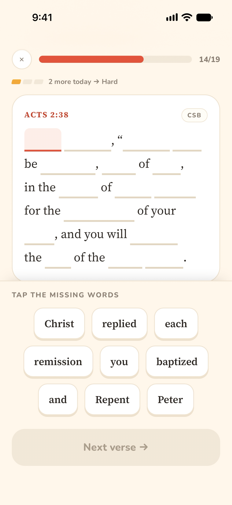
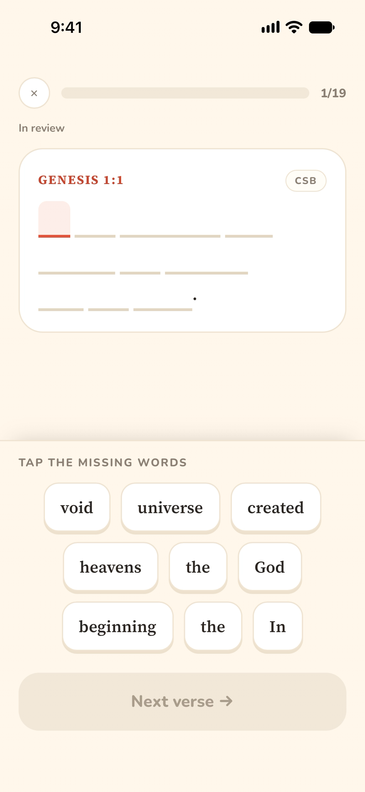
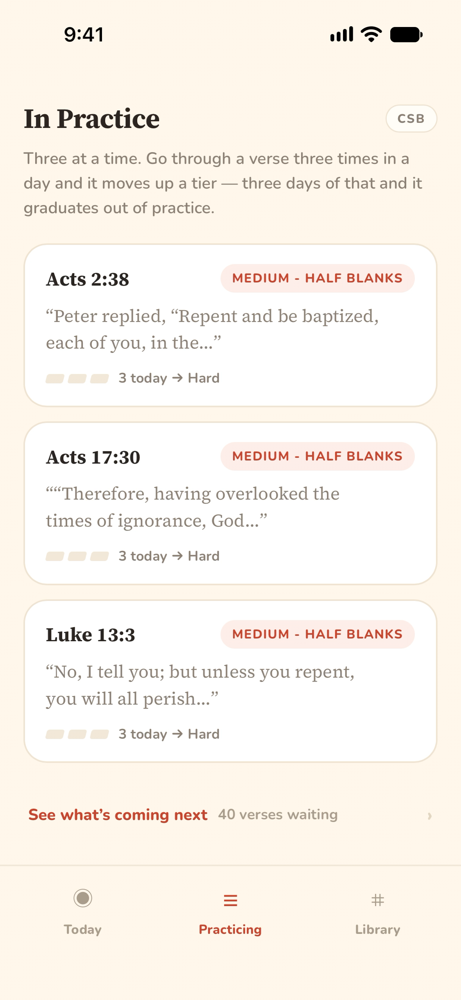
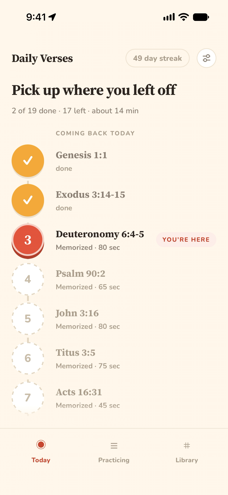
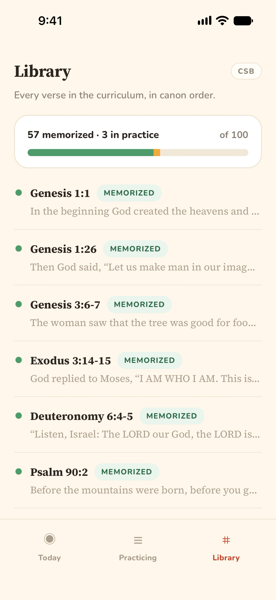
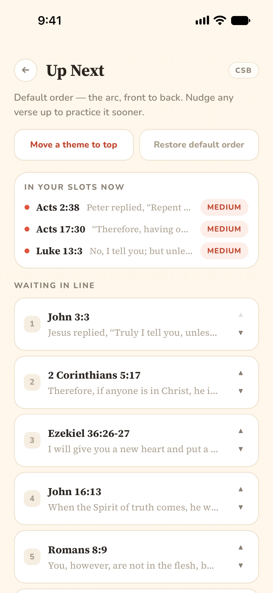
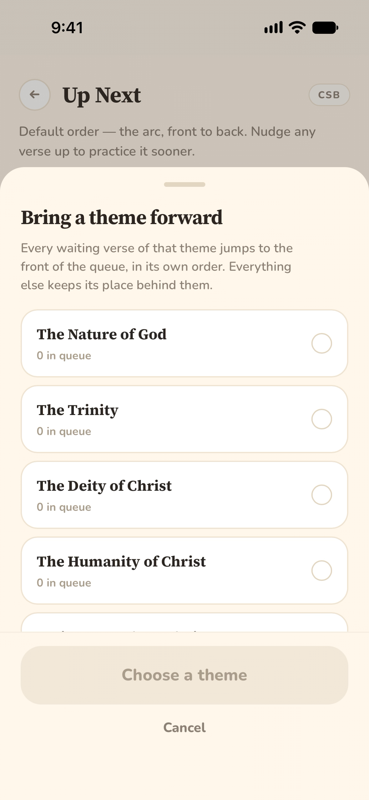
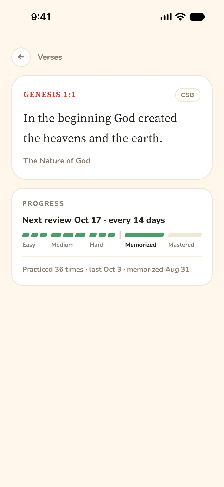

PROJECTScripture Memory · PWA · AI-Assisted Development
Memorizing scripture, one blank at a time
How I built Daily Verses—an app that walks you through each verse
until you know it by heart—in a single day, and what it taught me
about building software with AI.
It's been a goal of mine for a while to build a habit of memorizing
Bible verses. Not just for the sake of doing it, but to remind myself
of what Scripture says. I believe the Bible is the perfect and
inerrant word of God, and it's the root of what I believe as truth. So
for everything theological that I believe, there's a passage of
Scripture I should be able to point to.
If I'm ever asked about what I believe, I want to recite the passage
behind it—word for word, chapter and verse.
I started earlier this year by putting together 100 references I
wanted to memorize, specifically related to core Christian doctrine.
They covered a variety of themes, like the nature of God, the Trinity,
and salvation by grace through faith. I started with the first verse,
Genesis 1:1, then the second, Exodus 3:14–15—and then I fell off.
Why Memorization Is Hard
Scripture memorization is hard, especially when you're constantly
memorizing new verses. And there are a lot of pain points that make it
even more difficult than it needs to be. It takes time to find the
verse in the Bible several times a day, and even more if you're
working on several at once—constantly flipping between pages and
screens. Flashcards help some, but it isn't convenient to carry them,
store them, and keep them organized. A flashcard app is even worse;
just typing in each verse is tedious and doesn't feel productive.
An Idea at the Coffee Shop
Then one morning before work, at the coffee shop, I had an idea: an
app that would hold my hand and guide me through each and every verse.
The app would present one verse at a time, with a couple of words
swapped for blanks. A word bank below would let me tap the right word
for each blank. Over time, the number of blanks would grow until the
entire verse was blank. I'd only focus on three verses at a time, and
every day I'd still review the verses I had already memorized.
In Practice: Half Blank

Blanks: At Medium, half the words are blank. The ones left on the page act as anchors, and the word bank mixes in decoys like “remission” for “forgiveness.”
As a verse climbs from Easy to Medium to Hard, fewer words stay on the
page to lean on. Once it graduates, nothing is left: every review
starts from a completely blank verse.
In Review: Fully Blank

Blanks: A memorized verse comes back with every word blank—no anchors at all. Decoys like “universe” and “void” keep you from guessing.
Key Features
Daily Verses takes the friction out of memorization so the only thing
left is the practice itself:
Guided, Word by Word
Each verse starts with a few blanks and gradually loses
words—Easy, Medium, Hard—until you're reciting the whole thing
from memory.
Three at a Time
Only three verses are ever in practice. Go through one three times
in a day and it moves up a tier; three days of that and it
graduates.
Nothing Forgotten
Memorized verses come back on a widening schedule, so each day's
path mixes new practice with review of everything you already
know.



Three tabs: today's path, the three verses in practice, and the full
library of 100 verses.
A Prototype in a Day
As soon as I had the idea, I opened a new Claude chat and started
free-writing. I went back and forth with the model to organize my
thoughts into a cohesive spec for a prototype, then had it generate a
plan for a PWA and a backend. From there, I started a Claude Code
session with Fable 5 and had it build both.
That same day, I had a working prototype.
It was rough around the edges as far as UX goes, but it worked, and I
could see the potential as I poked around. There were plenty of
usability issues:
You had to constantly scroll up and down to see both the verse and
the word bank.
There was no way to pause a session midway through—you had to finish
or start over.
It wasn't clear to a new user how the progression system worked.
There was only one translation, the World English Bible.
Features meant for quality of life ended up being confusing, like
showing the first letter of each word in its blank.
But the app worked surprisingly well for something developed so
rapidly.
Polished Through Daily Use
Over the next couple of weeks, I spent time polishing. The app was
installed on my iPhone, I was using it heavily every day, and I kept
noticing things to fix. Each day I'd make those tweaks, redeploy, and
see what I thought.
A small group of people used it alongside me. For the most part, their
feedback matched mine, but they had several ideas I'd never thought
of—like a translation preference, or the ability to rearrange the
verse queue.
up next

tap →
theme drawer

Feedback from early users: nudge single verses up the queue, or bring
a whole theme to the front.
At a certain point, the changes I was making got smaller and
smaller, and it became clear the project was maturing. The app was
done, and anything further would be an update. Today, Genesis
1:1—the first verse I tried and failed to keep going past—sits in my
library as memorized, coming back for review every two weeks.

Genesis 1:1
How AI Changed the Way I Build
Between this project and my last one, AI agents have gotten really,
really good. They were capable enough that I could completely change
my development flow to take full advantage of them, and the result was
a product made faster, with fewer issues, and with better UX by
several factors.
Without AI, I'd have to be far more intentional about where my effort
went. Prototyping an idea was a huge investment, and if it turned out
sub-par or a dead end, that time was largely wasted. With AI tools, an
idea can be prototyped in minutes. Several prototypes can be made.
Iteration happens in minutes, not weeks—and this app took several
iterations before it became effective.
Prototypes are also where bugs love to creep in, but frontier models
rarely generate buggy code these days. When they do, the agents
themselves have the resources to take a bug report, debug it, test it,
and fix it.
Claude Design
Claude Design may have been the biggest game changer. Design is
tedious by hand—not just developing layout, navigation, and hierarchy,
but basic groundwork like building a design system. Claude Design let
me visualize several ideas at once instead of spending a full weekend
developing one concept. It fixed UX issues in minutes and updated
mockups across devices.
It let me focus on what the product is and how people use it, rather
than the minute details that matter less in a first version.
What Is a Developer For?
This raises the question: what is a software developer good for if AI
can do all the work? For me, it frees me to do what I enjoy
most—creating something useful as best I can.
AI doesn't know what to create or who the customers are—that's up to
me. It doesn't know the future of the product or what we need to do to
prepare for it. It's up to me to make sure we build with that future
in mind, so we don't engineer ourselves into a corner.
Developers will need a broad understanding of the whole stack in the
coming years. Minute code details will matter less. Readability will
always be important, but soon developers will hardly be modifying code
by hand.
Built With
Progressive Web AppClaudeClaude CodeClaude Design
Try Daily Verses
Start hiding Scripture in your heart, three verses at a time.